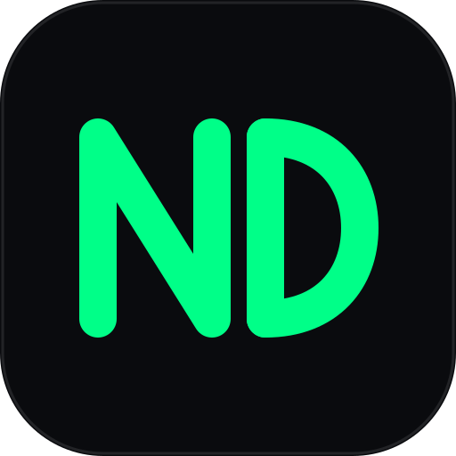

AI Agents Lab · Лаборатория ИИ Агентов
ИИ Агенты: обучение и эксперименты в браузере
AI Агенты — это помощники на основе языковых LLM моделей, которые используют инструкции, контекст диалога и внешние инструменты для решения задач. В AI Agents Lab можно изучать поведение AI Агентов: менять настройки LLM модели, смотреть полный запрос и ответ сервера, подключать функции и проверять результаты их вызова.
Лаборатория ИИ Агентов объединяет чат с LLM моделями, лабораторные работы и библиотеку Tools / function calling.
Подключение к LLM
Пройдите шаги по порядку: получите адрес OpenAI-совместимого API, личный API-ключ и API-имя LLM модели у провайдера LLM, затем настройте подключение. Ссылки со стрелкой открывают нужную панель рядом с Помощью независимо от раскладки окон. Указанный элемент плавно подсвечивается два раза.

NeuralDeep AI-хаб LLM Provider
регистрация, получение адреса API и ключа:
- Зарегистрируйтесь или войдите в NeuralDeep.
- Откройте раздел «Документация» и скопируйте Base URL адрес OpenAI-совместимого API
- Откройте раздел «Ключи», создайте API-ключ и скопируйте его.
- В разделе «Тарифы» проверьте доступные LLM модели и скопируйте точное API-имя выбранной LLM модели. Название тарифа и API-имя LLM модели могут различаться.
Настройки OpenAI API
- Откройте Настройки OpenAI API →. В списке провайдеров будет выбран NeuralDeep LLM Provider. Этот профиль уже создан — добавлять новый не нужно.
- В поле Base URL → проверьте или вставьте свой Base URL адрес OpenAI-совместимого API.
Не добавляйте /chat/completions: приложение добавляет этот путь самостоятельно. - В поле API key → вставьте личный API-ключ из кабинета провайдера без кавычек и слова Bearer. Ключ скрыт. Кнопка с глазом позволяет проверить ввод.
- В поле «LLM Модель» → укажите точное API-имя выбранной LLM модели. В профиле указан пример qwen3.6-35b-a3b. Замените его, если эта LLM модель недоступна вашему аккаунту.
- Нажмите Tab или щёлкните вне поля: настройки сохраняются автоматически в этом браузере. Для пробного запроса оставьте остальные параметры профиля без изменений.
- Перейдите в чат к полю сообщения →. Убедитесь, что выбран режим OpenAI API. Введите «Ответь одним словом: привет» и нажмите кнопку отправки или Enter. Дождитесь ответа LLM модели в чате — это подтверждает, что подключение работает.
Если ответа нет: при ошибке 401 проверьте ключ, при 403 — доступ аккаунта, при ошибке LLM модели — её API-имя, при 429 — лимиты. При сетевой ошибке проверьте Base URL и разрешение браузерных запросов у провайдера. Сообщение об ошибке появится в чате.
Личный API-ключ сохраняется в этом браузере. Не включайте его в сообщения, отчёты и скриншоты.
Режимы ИИ Агента и вызова LLM
Режим ИИ Агента и вызова LLM определяет параметры подключения, куда отправляется сообщение и источник ответа. Выберите его в списке рядом с названием страницы Чат. Показать режимы.
Кнопка Настройки режима открывает настройки выбранного режима.
- OpenAI API — прямой запрос к LLM модели через совместимый OpenAI API. Смотрите раздел Настройки OpenAI API, чтобы задать нужные параметры (профиль, URL, ключ и LLM модель).
- Webhook — запрос к вашему workflow, например в n8n. Нужен Webhook URL (адрес обработчика). LLM модель и инструменты настраиваются в workflow.
Режимы расположения окон
Режим расположения окон определяет, где откроется следующая страница. Выберите его кнопкой Режим окон в главном хедере или в заголовке окна. Подсказка кнопки показывает текущий режим и режим, который включится при следующем нажатии.
- Новое окно на ВЕСЬ экран — следующая страница займёт всю рабочую область сайта.
- Новое окно СПРАВА — следующая страница откроется справа.
- Новое окно СЛЕВА — следующая страница откроется слева.
Изменение режима применяется при следующем открытии страницы. Уже открытые окна сохраняют своё расположение. На узком экране вместо левого и правого расположения используются верхнее и нижнее.
Как работать с сайтом
Начните с чата и настроек подключения. Остальные страницы помогают выполнять задания и подключать инструменты. Ниже — назначение элементов интерфейса.
Хедер: страницы и управление
- Меню — дополнительные настройки приложения и ссылки.
- Помощь — этот справочник. Лабы — задания и отчёты. Tools — библиотека HTTP-инструментов. MCP — библиотека MCP-серверов и их инструментов. Чат — сообщения и ответы.
- Список режимов — Webhook или OpenAI API. Шестерёнка — настройки выбранного режима. Повторное нажатие не закрывает панель.
- Индикатор подключения — адрес или профиль и состояние последнего запроса. Проверьте его перед отправкой.
- Прямоугольник раскладки — место открытия следующей страницы. Жук — дебаг скрыт, только полоска или раскрыт.
- Корзина — очистить чат. RU/EN — язык интерфейса. Солнце/луна — тема.
Чат: сообщение, ответ и инструменты
- Поле сообщения — введите запрос. Enter отправляет, Shift+Enter добавляет строку. Стрелка отправки выполняет запрос.
- Подсказки — готовые варианты запросов. Выберите и проверьте текст перед отправкой.
- Ответ — результат выбранного режима. Копирование сохраняет текст в буфер; Debug показывает запрос, ответ и служебные данные.
- Tool Call — просьба LLM модели выполнить инструмент. Проверьте имя и аргументы, выполните доступный HTTP-вызов или введите результат вручную, затем продолжите с tool results.
- Ручной/автоматический режим инструментов — управление продолжением цепочки. «Пауза» останавливает автоматическое продолжение, «Следующий шаг» запускает очередной шаг, когда эти кнопки доступны.
Настройки: Webhook и OpenAI API
- Webhook: GET/POST — метод. TEST/PROD — выбранный URL. Поле адреса — обработчик. Список недавних подключений — сохранённые адреса. Кнопка «Проверить URL» — проверка. Нажатие на ID копирует его, «Начать новую сессию» создаёт новый ID разговора.
- OpenAI API: список профилей выбирает подключение; «+» создаёт профиль, Clone копирует, карандаш меняет имя, удаление доступно для личных профилей. Защищённый профиль преподавателя меняйте через копию.
- Base URL, API key, LLM Модель — адрес, ключ и API-имя LLM модели. Системный промпт задаёт инструкции. Параметры генерации меняйте по одному; «?» рядом с полем объясняет его действие.
- История сообщений включает предыдущие реплики в запрос. Tools включает определения функций; JSON Schema задаёт аргументы, HTTP-настройки описывают выполнение.
- Предпросмотр показывает endpoint, заголовки и тело будущего запроса. Кнопки копируют JSON и cURL. Это просмотр, а не редактор истории.
Лабы: задания и отчёт
Выберите работу в верхней полосе. Содержание ведёт к цели, подготовке, экспериментам и отчёту. Раскройте ответ задания, заполните результат и выводы: прогресс обновится автоматически. Автор и группа попадут в экспорт. «Скачать отчёт» предлагает форматы; «Загрузить JSON» подключает работу или восстанавливает отчёт. Ответы сохраняются в текущем браузере.
Tools и MCP: библиотеки
Выберите готовый пример или создайте своё определение. У Tools задайте схему аргументов, HTTP-запрос и соответствие полей. Проверьте результат перед использованием. У MCP настройте подключение к серверу и доступные инструменты. Импорт и экспорт JSON переносят определения. Доступность вызова зависит от подключения и выбранного инструмента.
Панели и окна
Панели позволяют держать рядом, например, лабораторную и чат. Выбранная раскладка действует при следующем открытии страницы. Переключение раскладки само по себе ничего не закрывает.
- Новая панель СПРАВА — новая страница открывается справа.
- Новая панель на весь экран — выбранная страница занимает рабочую область приложения.
- Новая панель СЛЕВА — новая страница открывается слева.
Переключение раскладки
Одинаковая иконка в хедере сайта и заголовке каждой панели управляет одной настройкой. Цикл: справа → весь экран → слева → весь экран → справа. Подсказка сообщает выбранный режим. На узком экране панели располагаются сверху и снизу.
Кнопки заголовка панели
- Иконки страниц и шестерёнка — открыть страницу или настройки. При двух панелях кнопки заголовка выбирают содержимое этой панели.
- Две стрелки — поменять панели местами.
- Прямоугольник — режим следующего открытия, синхронизирован с хедером.
- Четыре уголка — развернуть текущую панель на рабочую область. Выбранный режим открытия не меняется.
- Крестик — закрыть эту панель, оставив соседнюю. Последнюю панель закрыть нельзя.
Размер, сохранение состояния и ссылки из помощи
Перетаскивайте разделитель, чтобы изменить размеры. С клавиатуры используйте стрелки после фокуса на разделителе. Переключение страниц сохраняет состояние уже открытых панелей. Перезагрузка — отдельное действие: не рассчитывайте на сохранение текста чата.
Три ссылки в начале этой помощи открывают чат, лабы или Tools рядом с помощью независимо от режима. Помощь остаётся видимой, а настройка раскладки не меняется. Это позволяет посмотреть интерфейс и вернуться к инструкции.
Практика с LLM моделью
OpenAI API — одно из направлений практики: параметры генерации, системные инструкции, история сообщений и JSON Schema. Для автоматизации используйте Webhook.
В библиотеке Tools приложение выполняет HTTP-запрос и передаёт результат обратно LLM модели. LLM Модель выбирает функцию и формирует аргументы. Сами данные получает приложение.
Полевой справочник · от сообщения до ответа
Как чат общается с AI
Вы пишете обычный текст. Интерфейс упаковывает его в запрос, отправляет по выбранному маршруту и показывает ответ LLM модели. Весь путь — четыре простых шага.
Быстрый старт: n8n
Вставьте webhook URL
Возьмите Test или Production URL из узла Webhook в n8n.
Напишите сообщение
Чат отправит message и постоянный sessionId.
Верните JSON
Самый простой ответ: объект с полем message.
{
"message": "Объясни, что такое API",
"sessionId": "session_abc123"
}{
"message": "API — это способ…",
"suggestions": ["Пример", "Подробнее"]
}Как проходит запрос
Выбор режима определяет маршрут сообщения.
HTTP · JSON
Что именно отправляет текущий UI
message — ваш текст. sessionId — метка разговора: по ней workflow понимает, какие сообщения относятся к одному диалогу.
{ "message": "Привет!", "sessionId": "session_abc123" }?sessionId=session_abc123&message=Привет%21
Какой ответ принимает чат
{
"message": "Готово!",
"suggestions": ["Дальше"],
"debug": { "node": "Agent" }
}Вместо message допустимы алиасы text или output. suggestions и debug необязательны.
{ "error": "Не удалось вызвать LLM модель" }Любой непустой JSON чат может показать как есть, но единый формат с message проще поддерживать.
NeuralDeep API
Провайдер определяет доступные LLM модели и поддерживаемые параметры.
Адрес для личного профиля: https://api.neuraldeep.ru/v1. Для профиля преподавателя используйте выданный адрес. Проверяйте API-имя LLM модели и ограничения в своём кабинете.
Настройка Webhook
Webhook соединяет чат с обработчиком: тот получает сообщение, выполняет вашу логику и возвращает ответ.
В n8n создайте Webhook → обработку message/sessionId → Respond to Webhook с непустым message. Вставьте URL в настройки Webhook. Test работает при ожидании тестового события, Production — у активированного workflow.
Диагностика
Если что-то не работает
Сначала проверьте выбранный режим и настройки подключения, затем найдите статус или сообщение об ошибке в Debug. Ниже — пояснения частых ошибок.
404 · n8n Test / Production
Test webhook должен быть запущен в режиме ожидания. Production URL доступен только у активированного workflow. Проверьте часть /webhook-test/ или /webhook/.
Invalid JSON
Убедитесь, что ответ — корректный JSON, Content-Type равен application/json, а строки заключены в двойные кавычки.
Пустой ответ
Верните непустое поле message, text или output. Проверьте выражение в узле Respond to Webhook.
CORS
Браузер блокирует прямой запрос, если сервер не разрешил origin страницы. Настройте CORS у провайдера или используйте Python backend.
401 · API key
Проверьте ключ и заголовок Authorization: Bearer …. Никогда не добавляйте ключ в URL.
429 · Rate / concurrency
Достигнут лимит запросов или одновременных вызовов. Дождитесь завершения запросов и проверьте ограничения аккаунта.
Timeout
Запрос выполнялся слишком долго. Проверьте логи выбранного маршрута и попробуйте более короткий запрос.
Безопасность прежде всего
Не помещайте API-ключи в URL, сообщения или отчёты. Параметры личного подключения сохраняются в браузере.